Main Component Body
CAUTION: Do not clamp any valve body component in a vise. This practice can damage the component resulting in unsatisfactory operation after assembly and installation. Do not use pliers to remove any of the valves, plugs or springs and do not force any of the components out or into place. The valves and valve body housings will be damaged if force is used. Tag or mark the valve body springs for reference as they are removed. Do not allow them to become intermixed.
1. Remove fluid filter.
Governor Pressure Solenoid And Sensor Wire Locations:
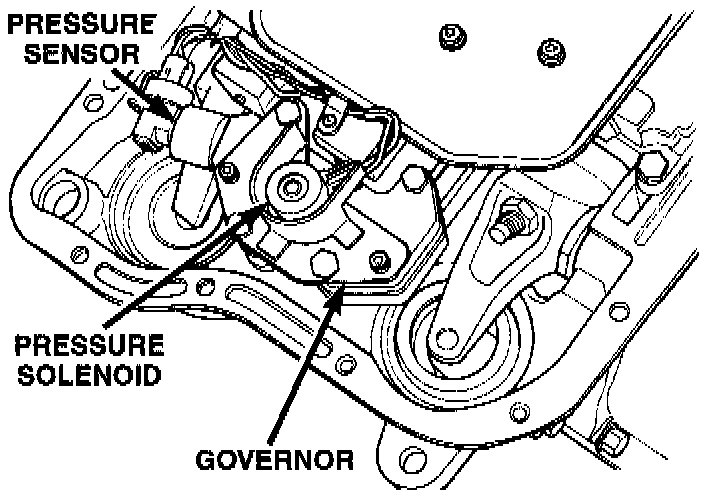
2. Disconnect wires from governor pressure sensor and solenoid.
Governor Body And Retainer Plate Attaching Screw:
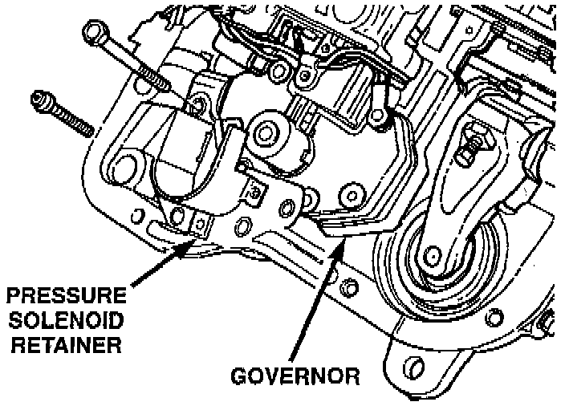
3. Remove screws attaching governor body and retainer plate to transfer plate.
Governor Body And Gasket:
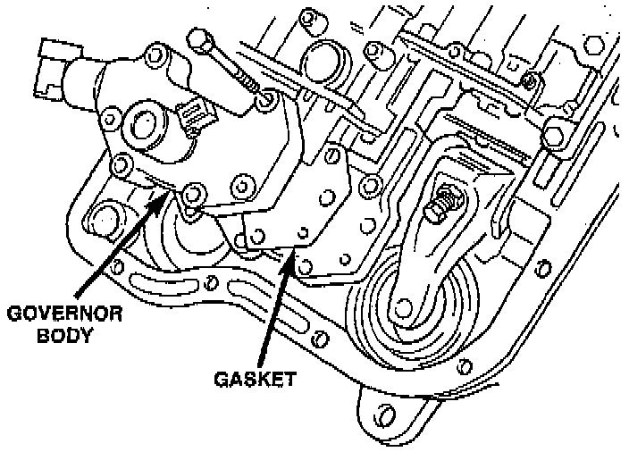
4. Remove retainer plate, governor body and gasket from transfer plate.
5. Disconnect wires from governor pressure sensor, if not done previously.
Governor Pressure Sensor:
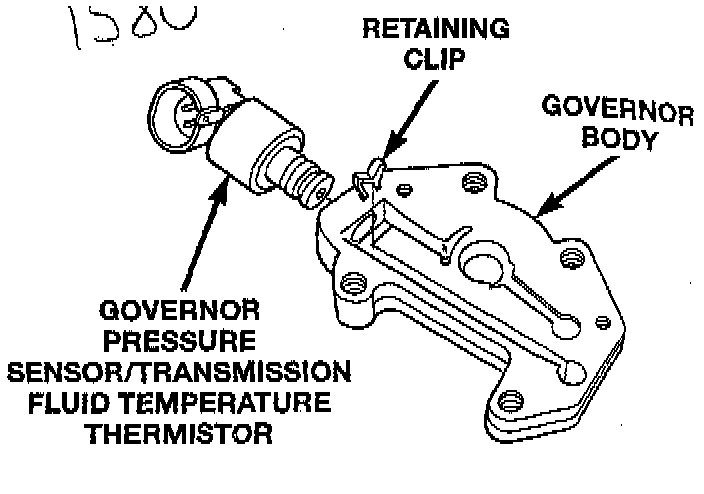
6. Remove governor pressure sensor from governor body. Sensor is retained in body with M-shaped spring clip. Remove clip with small pointed tool and slide sensor out of body.
Governor Pressure Solenoid:
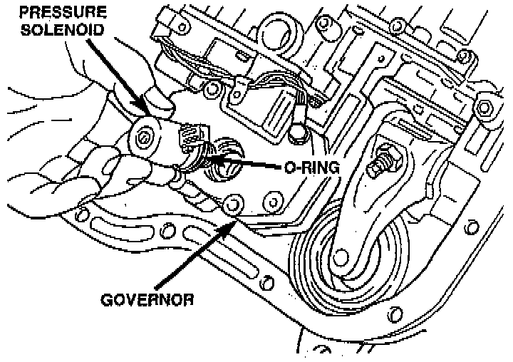
7. Remove governor pressure solenoid by pulling it straight out of bore in governor body. Remove and discard solenoid O-rings if worn, cut, or torn.
8. Remove transmission fluid filter.
Solenoid Harness Case Connector Shoulder Bolt:
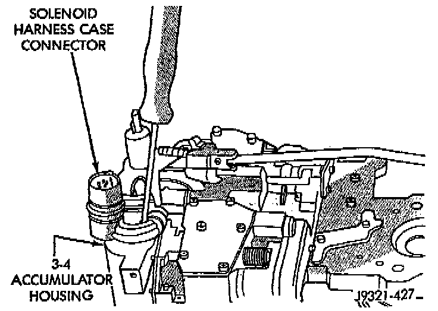
9. Remove small shoulder bolt that secures solenoid harness case connector to 3-4 accumulator housing. Retain shoulder bolt. Either tape it to harness or thread it back into accumulator housing after connector removal.
Unhooking Solenoid Harness From Accumulator Cover Plate:
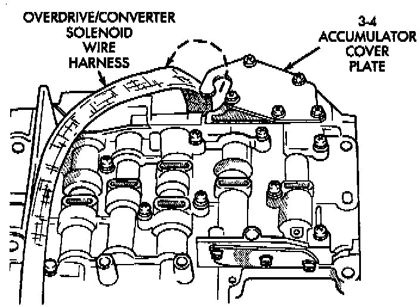
10. Unhook overdrive/converter solenoid harness from 3-4 accumulator cover plate.
Solenoid Assembly Screws:
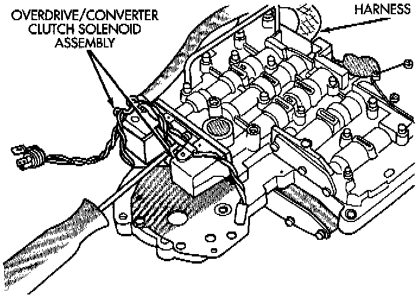
11. Turn valve body over and remove screws that attach overdrive/converter solenoid assembly to valve body.
Solenoid Assembly:
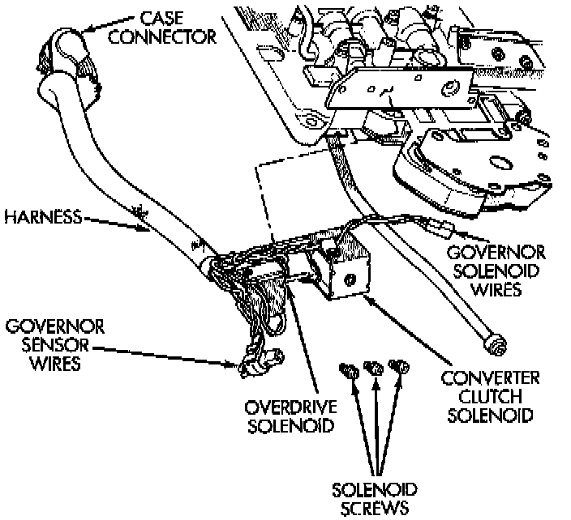
12. Remove solenoid and harness assembly from valve body.
Boost Valve Cover Location:
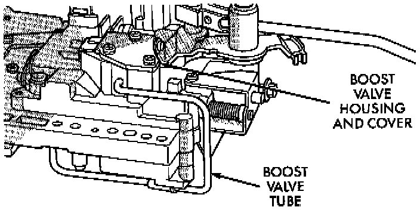
13. Remove boost valve cover.
Boost Valve Components:
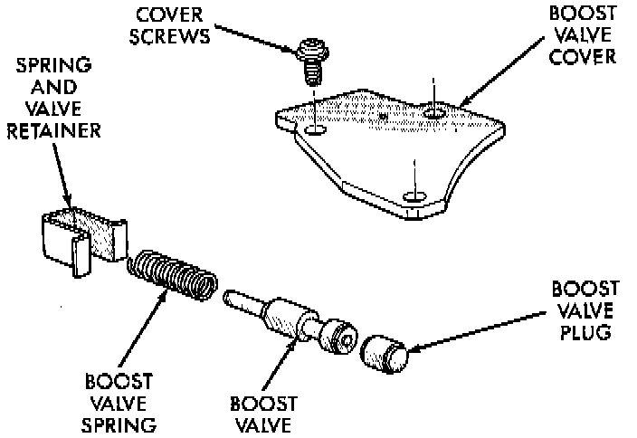
14. Remove boost valve retainer, valve spring and boost valve.
Detent Ball And Spring:
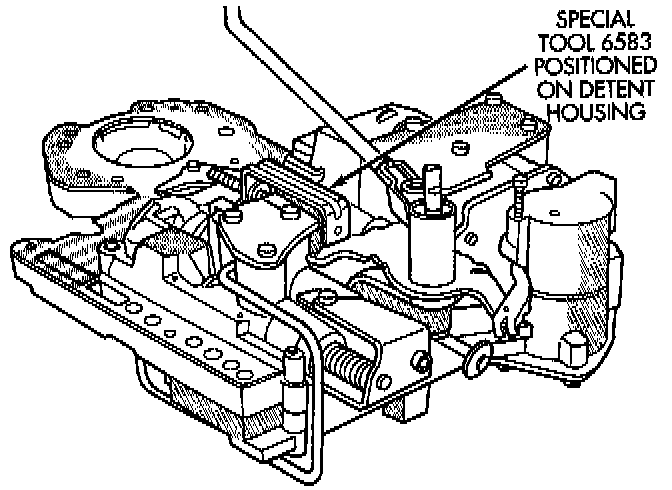
15. Secure detent ball and spring with Retainer Tool 6583.
Park Rod:
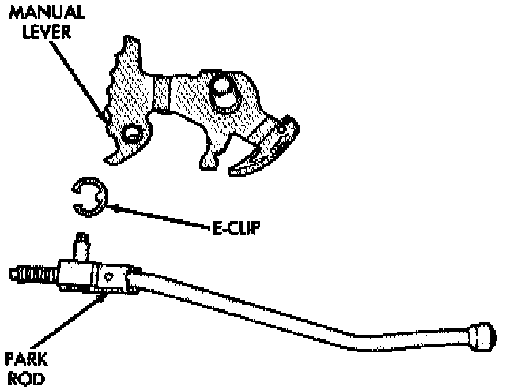
16. Remove park rod E-clip and separate rod from manual lever.
Throttle Lever E-Clip And Washer:
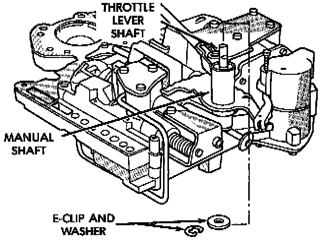
17. Remove E-clip and washer that retains throttle lever shaft in manual lever.
Manual And Throttle Lever:
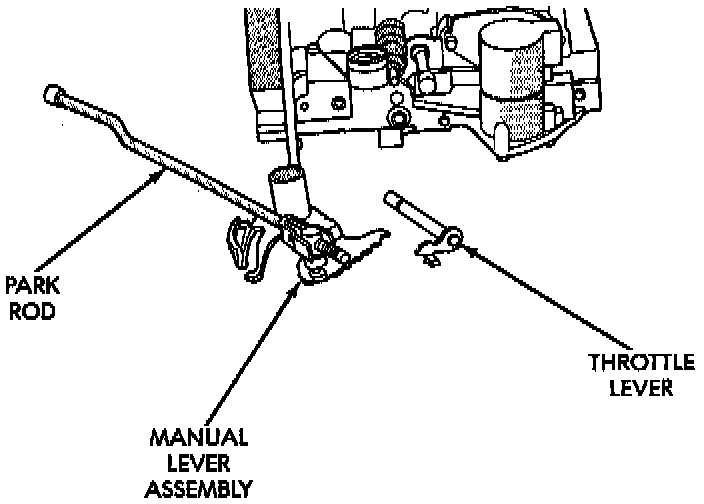
18. Remove manual lever and throttle lever. Rotate and lift manual lever off valve body and throttle lever shaft. Then slide throttle lever out of valve body.
Detent Ball And Spring:
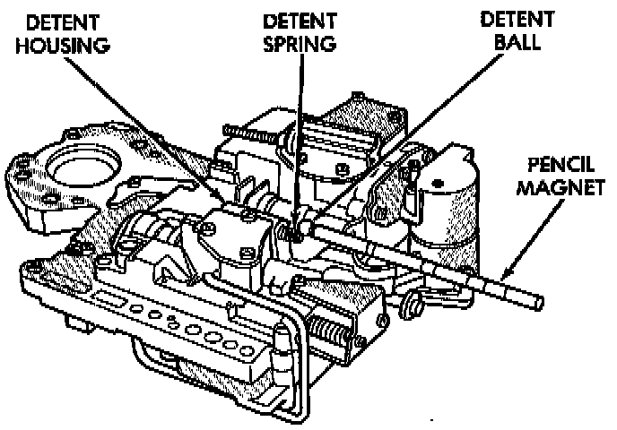
19. Position pencil magnet next to detent housing to catch detent ball and spring. Then carefully remove Retainer Tool 6583 and remove detent ball and spring.
Adjusting Screw Bracket Fastener:
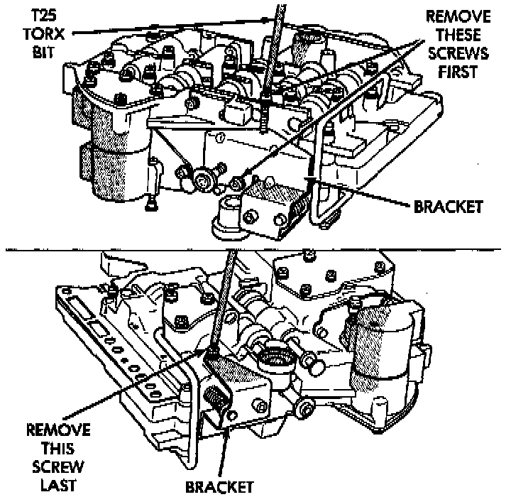
20. Remove screws attaching pressure adjusting screw bracket to valve body and transfer plate. Hold bracket firmly against spring tension while removing last screw.
Adjusting Screw Bracket And Spring:
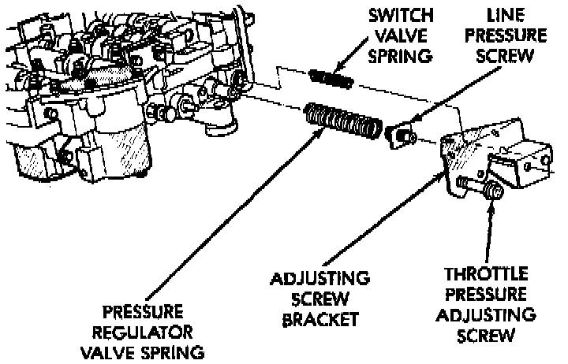
21. Remove adjusting screw bracket, line pressure adjusting screw, pressure regulator valve spring and switch valve spring. Do not remove throttle pressure adjusting screw from bracket and do not disturb setting of either adjusting screw during removal.
Upper Housing Control Valve Locations:
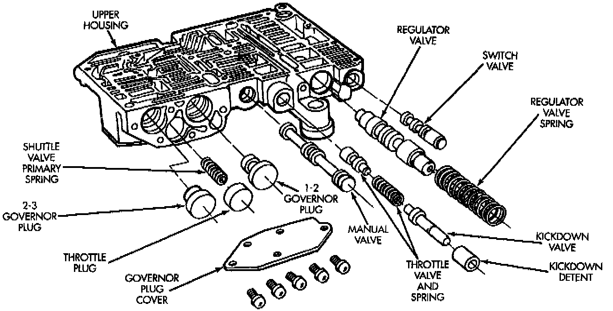
22. Turn upper housing over and remove switch valve, regulator valve and spring, and manual valve.
23. Remove kickdown detent, kickdown valve, and throttle valve and spring.
Accumulator Housing Screw Locations:
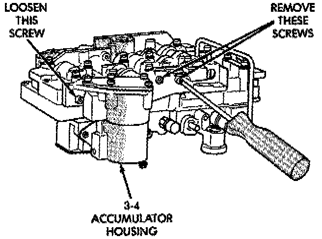
24. Loosen left-side 3-4 accumulator housing attaching screw about 2-3 threads. Then remove center and right-side housing attaching screws.
Shift And Converter Clutch Valve Springs And Plug:
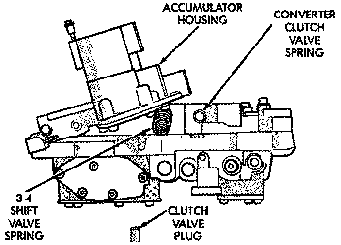
25. Carefully rotate 3-4 accumulator housing upward and remove 3-4 shift valve spring and converter clutch valve plug and spring.
Accumulator Housing, Valve Springs And Plug:
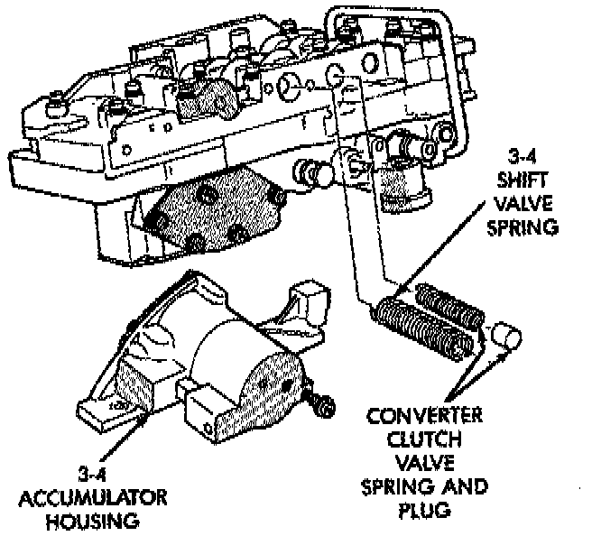
26. Remove left-side screw and remove 3-4 accumulator housing from valve body.
Boost Valve Tube Brace:
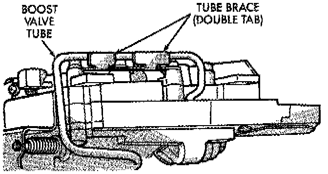
27. Bend back tabs on boost valve tube brace.
Boost Valve Tube:
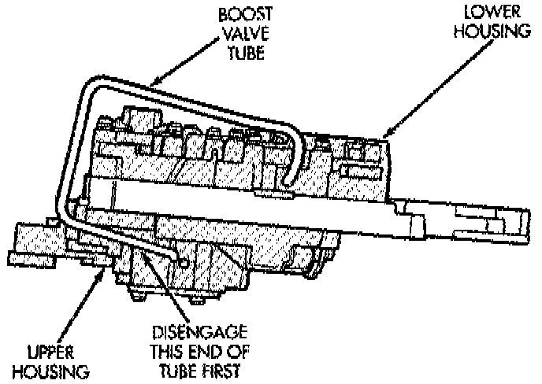
28. Remove boost valve connecting tube. Disengage tube from upper housing port first. Then rock opposite end of tube back and forth to work it out of lower housing.
CAUTION: Do not use tools to loosen or pry the connecting tube out of the valve body housings. Loosen and remove the tube by hand only.
Lower Housing:
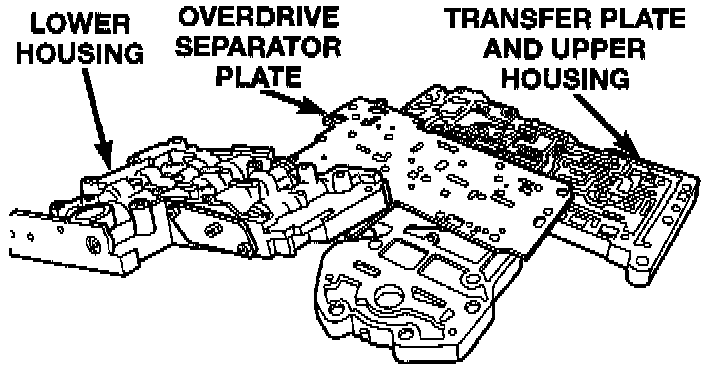
29. Turn valve body over so lower housing is facing upward. In this position, the two check balls in upper housing will remain in place and not fall out when lower housing and separator plate are removed.
30. Remove screws attaching valve body lower housing to upper housing and transfer plate. Note position of boost valve tube brace for assembly reference.
31. Remove lower housing and overdrive separator plate from transfer plate.
ECE Check Ball:
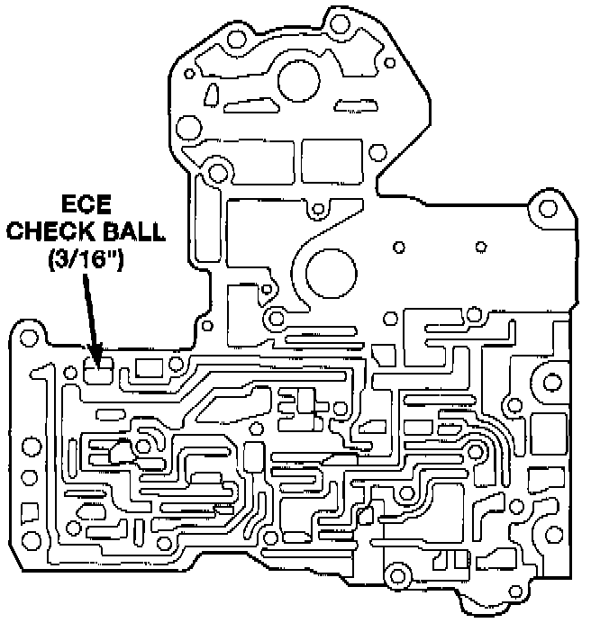
32. Remove the ECE check ball from the transfer plate. The ECE check ball is approximately 4.8 mm (3/16 inch) in diameter.
Transfer Plate:
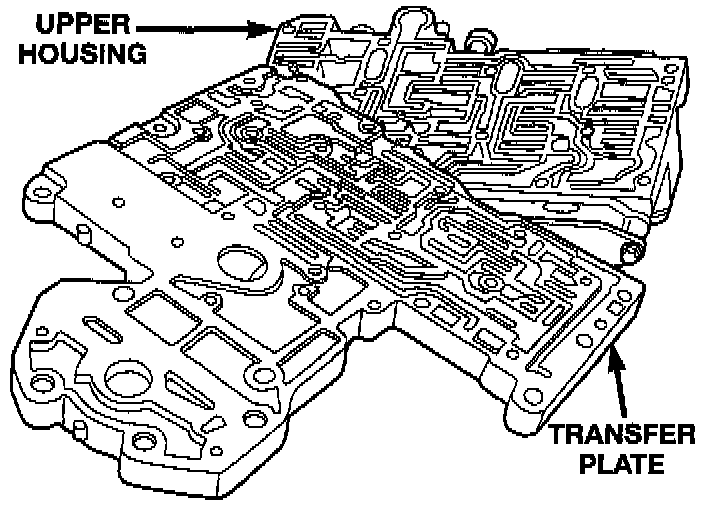
33. Remove transfer plate from upper housing.
34. Turn transfer plate over so upper housing separator plate is facing upward.
Upperhousing Separator Plate:
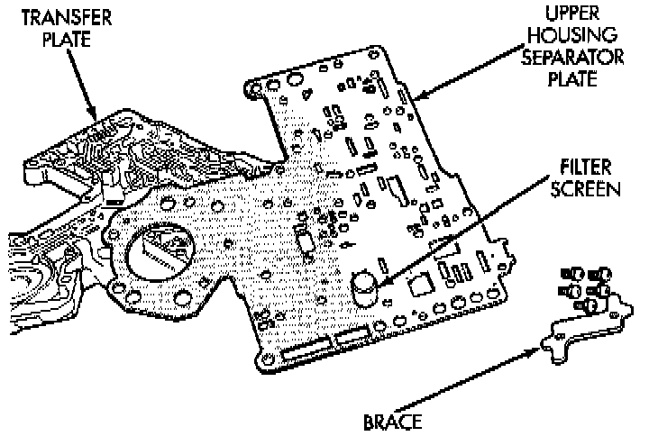
35. Remove upper housing separator plate from transfer plate. Note position of filter in separator plate for assembly reference.
Rear Clutch And Rear Servo Check Ball Locations:
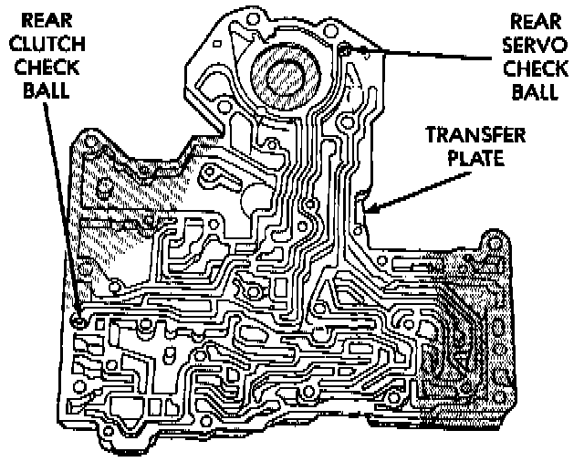
36. Remove rear clutch and rear servo check balls from transfer plate. Note check ball location for assembly reference.